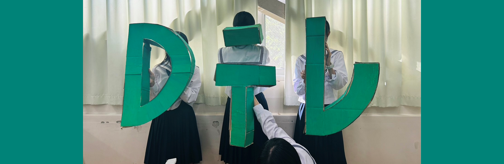

教室展示の混雑状況
中学2年/高校2年
中学生の部
2-B
しげゆキングダム
自分の城がほしいという赤井先生のために、「しげゆキングダム」を築き上げろ！
中学2年B組の教室内にある4つのゲームで資金を稼ぎ、よりゴージャスな城を目指してください！
高校生の部
2-A
桐蔭生格付けチェック
デスクリプションデスクリプションデスクリプションデスクリプションデスクリプションデスクリプションデスクリプションデスクリプションデスクリプションデスクリプションデスクリプションデスクリプションデスクリプション
2-B
Habby Potter と不死鳥の一騎団
〜伝説の魔法学校、遂に開校〜
ここは、魔法が取り巻く不思議な世界。呪文を唱え、炎を操り、ほうきを乗りこなす生徒たち。あなたも予測不能の魔法体験を今、ここで。ホグワーツ特急があなたのご乗車をお待ち致しております。
2-C
VS2C ～shooting star～
流れてくるタワーをボールで倒すshooting sniperと回転する土台にコインを積むcoin towerの2種類のゲームと宇宙を連想させるフォトスポットを楽しむことができます！
2Cで最高に楽しい文化祭の思い出を作りませんか？お待ちしています✧
2-D
Dテレ ～D組であそぼ～
デスクリプションデスクリプションデスクリプションデスクリプションデスクリプションデスクリプションデスクリプションデスクリプションデスクリプションデスクリプションデスクリプションデスクリプションデスクリプション
2-E
All To In
2年E組の教室展示カジノALL TOIN です！
ポーカー、ブラックジャック、ルーレット、チンチロ、のカジノブースと、本場ラスベガスのカジノをイメージして作ったフォトスポットもあります！桐蔭のラスベガスで運試しをしてみませんか⁉︎
2-F
未来視てみま商店
朝目が覚めると、なぜか泣いている。見ていたはずの夢は、いつも思い出せない。ただ、ずっと何かを、誰かを・・・探している。そういう気持ちに取り憑かれたのは、たぶんあの日から。
あの・・・2-Fに行った日。
2-G
斬王
我々は「斬王」を求むる者である。この桐蔭に強者の存在を予感し、我らが王を求め、はるばるやってきた。
我らの精鋭を、そしてこの桐蔭の、他の武豪たちを前にして、ひるまずにいられるか...? いざ、尋常に勝負!!
模擬店の混雑状況
高校3年
3-A
マリリン革命
桐蔭國３－A地区に住む愉快な仲間たちによる領主マリリンへの反逆をテーマとした模擬店です。
圧倒的安さとその美味しさが自慢のワッフルとホットサンドです。お買い求めの際にはスチームパンク風の可愛さ満点の装飾を、是非ご覧ください。
3-B
Saraasa Bazaar
デスクリプションデスクリプションデスクリプションデスクリプションデスクリプションデスクリプションデスクリプションデスクリプションデスクリプションデスクリプションデスクリプションデスクリプションデスクリプション
3-C
Cop-shop
3年C組Cop-shopです🚓
ここでは、200円のピザと100円のチュロスが食べられます！ピザのパリパリ生地ととろ〜りチーズは五感に響くこと間違いなし☆チュロスはトッピングが選べます！ぜひお越しください！！

3-D
萌萌哒
私たちのクラスのテーマは、中国です！推しポイントは、大学芋にバニラアイスを無料でつけられることです！さらには、何種類もの餃子を試食し、選び抜かれた味は太鼓判付きです！
是非是非、3D 萌萌哒にお越しください。

3-E
E-planet
チャーハンとたこさんドック(小さいアメリカンドック)を両方ともこだわりの手料理で提供しています！！
写真スポットもあるので是非お友達とかと撮ってってね！
3-F
WANTED
富、名声、力、そして学歴、この世の全てを手に入れたFの一族！
航海の途中で見つけたスモアとホットドッグという至高の財宝を持って、この文化祭に参上！欲しけれゃくれてやる！この世の全てをFに置いてきた！
3-G
シン・夏祭り ～究極の二拓～
焼き鳥はタレ「浸」、塩「振」を、たこ焼きは普通の味「真」、ロシアンルーレットたこ焼き「辛」を用意しています。
友達、恋人と一緒にロシアンルーレットに挑戦してみては？
さらに！！裏の屋台でゲームをすると…